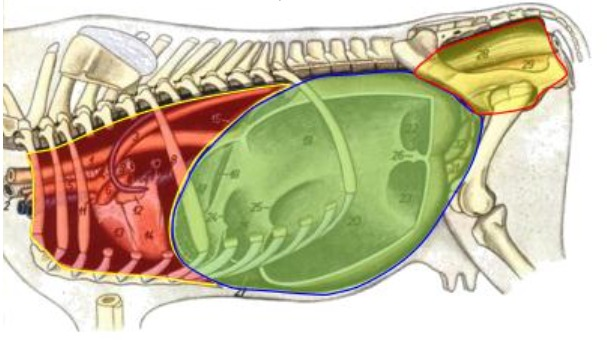

-
Esplancnologia é o estudo das vísceras
que se relacionam com a manutenção e
persistência da vida.
-
Toda víscera é um órgão, mas nem todo o
órgão é uma víscera.
-
Para ser considerado uma víscera, o
órgão precisa estar dentro de uma
cavidade. Os animais tem três cavidades:
Cavidade Torácica, Cavidade Abdominal e a
Cavidade Pélvica.
Cavidade Torácica
Está localizada na parte vermelha da imagem. É limitada dorsalmente* pelas vértebras Torácicas; ventralmente* pelo O. Esterno; cranilmente* pela 1º vértebra Torácica, Cartilagem do Manúbrio do O. Esterno e o 1º par de Oo. Costelas; caudalmente* pela última vértebra Torácica, último par de Oo. Costelas, o M. Diafragma e a Cartilagem Xifóide do O. Esterno.
